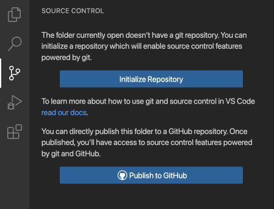
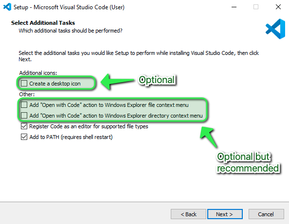

Lesson 01 : Introduction to Visual Studio Code
Overview
In this lesson, we’ll go over an Integrated Development Enviroment (IDE) known as Visual Studio Code, also commonly referred to as VS Code. We’ll explore what an IDE - such as Visual Studio Code - is, benefits of using it, and in and out’s of using Visual Studio Code.
Learning Objectives
Students will understand what VS Code is and why they should use it.
Students will know how to download extensions and use VS Code to write source code. s ## Lesson
What is Visual Studio Code ?

Visual Studio Code is a Integrated Development Enviroment (IDE) developed by Microsoft for Windows, Linux and macOS. An integrated development environment or IDE is a software for building applications. An IDE is just like a text editor except instead of writing documents you’re writing source-code. Visual Studio Code includes features such as syntax highlighting, error highlighting, intelligent code completion, snippets, code refactoring, and embedded Git. Users can change the theme, keyboard shortcuts, preferences, install extensions that add functionality, and has support for different programming languages.
Syntax Highlighting
To improve readability for developers, VS Code has syntax highlighting. What this means, is that special keywords of the programming language are highlighted in different colors so that the developer can quickly differentiate these keywords from other texts. For example, if you’re writing Python code without syntax highlighting, it could be harder to identify keywords from other texts. With syntax highlighting, that gets much easier because the Python keywords and variables are colored differently.
Error Highlighting
Just like checking spelling in a text document, IDEs can highlight mistakes you make in your programming code. For example, if I delete the equal symbol where it’s needed, my IDE will highlight the error.
Intelligent Code Completion
When you’re typing a message on your phone, it suggests words as you type. Visual Studio Code’s code completion is a similar feature. Since programming languages have special keywords, it can offer suggestions to autocomplete words as you start typing them. Together with IntelliSense, this makes the IDE smart and even able to understand your code. They can detect variables and functions and offer them as suggestions during autocomplete. For example, if I have a Python function named myFunction defined at the top of the Python file, then as soon as I start typing the letter m my IDE suggest this function as an autocompletion. This speeds up the process of coding applications by reducing typos and other common mistakes.
Code Refactoring
Since IDEs understand your code, they can help you if you need to change it. To demonstrate how refactoring works, let’s continue with the myFunction function that I defined a moment ago. In the code, the function is then called multiple times. It can also be called in the code of other files too. But what if you need to rename this function? You would need to rename it in every file that uses the function ensuring that you update those files to use the new name. This process is known as refactoring, changing the structure of the code without changing the functionality. Doing this manually is very time consuming and prone to error. If you mistyped the new function name in one place, the application will break. Since the IDE understand your code, it can assist with refactoring and automatically update the function name across all files.
Snippets
Code snippets are small blocks of reusable code that you can add to a code file by using the right-click context menu command or a combination of hotkeys. This saves time and ensures consistency on routine operations. Snippets make it easier to remember specific formatting for functions and can be shared amomg a team to ensure no one is doubling down on the same work.

Git
Git is a version control system that tracks changes in any set of computer files, usually used for coordinating work among developers who are collaboratively developing source code during software development. You’ll learn more on Git in Lesson 3. For now, it’s good to know that Visual Studio code has built-in support for Git through Source Control and the terminal.

VS Code has a host of extensions and plugins that add various functionality to aid rapid software development.
Practice Activity
Download and Install Visual Studio Code
Prerequisites
- VS Code is lightweight and should run on most available hardware and platform versions. You can review the System Requirements to check if your computer configuration is supported.
For Windows PC
- Visit the official website of Visual Studio Code using any web browser like Google Chrome, Microsoft Edge, etc.
- Click the “Windows” button under the Windows logo on the website to start the download of the Visual Studio Code Application.
- When the download finishes, click on the installer icon in the downloads folder to start the installation process of the Visual Studio Code.
- After the Installer opens, it will ask you for accepting the terms and conditions of the Visual Studio Code. Click on I accept the agreement and then click the
Next>button.
- Proceed through the installation process by clicking on the “next” button at each prompt.
- At this prompt, optionally check the boxes for “Creating a desktop icon”, and adding VS Code to the Right-Click menu functionality of Windows File Explorer, then click
Next >.

- Confirm the installation options, then click
Install. The installation will proceed.
- Click
Finishto exit the installation and (by default) launch Visual Studio Code.
Your VS Code is installed on your PC and ready for you to start coding away with it.
You can always launch it by clicking on the Desktop Icon (if you selected that option during the installation process) or by searching it in the ⊞ Start Menu.
For Mac OS
- Navigate to the official website of Visual Studio Code using any web browser like Safari, Google Chrome etc.
- Click the “Mac” button under the Apple logo on the website to start the download of the Visual Studio Code Application
- Depending on the browser used and security settings within, there may be prompts to allow access to the Download folder or similar. Allow any prompts that are generated.
- Hold down the
Command ⌘key on your keyboard and press theSpace Barand type ‘Downloads’ in the search field, click on the Downloads Finder icon.
- Click on “Downloads” on the left side of the Finder window then locate the Visual Studio Code application file. You can click on the Date Added column to sort by newest to help you find the VS Code file.
- Click and drag the Visual Studio Code application to the Applications folder on the left.
Your VS Code is installed on your Mac and ready for you to start coding away with it.
You can launch it by clicking on the Launchpad Icon in the Mac OS dock and then either look for the Visual Studio Code icon, or use the Search bar at the top of the Launchpad.
Click on the Visual Studio Code icon once it has been located.
Mac OS will prompt to confirm that opening a program downloaded from the internet was an intended action. Click Open
Install VS Code’s Python Extension
This is an extension with rich support for the Python programming language, including features such as IntelliSense (Pylance), linting, debugging, code navigation, code formatting, refactoring, and more!
- Open VS Code and navigate to the extention icon on the left pane.

- Search “Python” in the search box and select the first item that says “Python” in the search result and click on install.

- Once it’s done installing, your python extension should be good to go.

Conclusion
Nice work completing this lesson! By now you should:
Know what Visual Studio Code is, and IDE’s in general.
Know how to and have VS Code installed on your computer.
Know how to install and have an extension installed in VS Code.
In the next lesson, you will learn how to use Quarto - an open-source publishing system, and have the extension installed in VS Code.